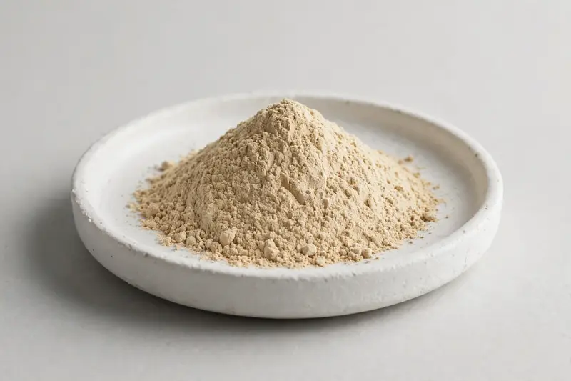

Agaricus bisporus fruiting body extract for immune and culinary formulations.

Overview
White button mushroom extract is derived from Agaricus bisporus fruiting body and is commonly standardised around beta-glucan and ergothioneine content. Buyer interest spans immune-positioned supplements and culinary or savory formulations seeking mushroom-derived ingredients. As a Xi'an trading company, we source through partner producers and confirm feasibility once your target specification is received.
Specifications below reflect commonly requested options in the market — not a stock list. Share your target spec and we'll confirm exactly what we can supply, honestly.
| Specification | Details |
|---|---|
| Botanical identity | White button mushroom fruiting body extract powder |
| Marker compound | Commonly requested spec grades: beta-glucan content grades and ergothioneine grades; actual specs confirmed on inquiry |
| Appearance | Tan fine powder |
| Mesh size | Typically 80–100 mesh (confirm per inquiry) |
| Testing | COA/TDS arranged on request; scope agreed per your spec |
Applications
Documentation
We don't claim in-house labs or certifications we don't hold. COA and TDS documents can be arranged on request, and testing scope is agreed against your specification before supply.
FAQ
Related products
Morchella esculenta
Key marker: Polysaccharides
View specs →Coprinus comatus
Key marker: Polysaccharides
View specs →Polyporus umbellatus
Key marker: Polysaccharides
View specs →Tricholoma matsutake
Key marker: Polysaccharides
View specs →Send your target spec and volumes — we'll respond with a tailored quotation.
Request a Quote